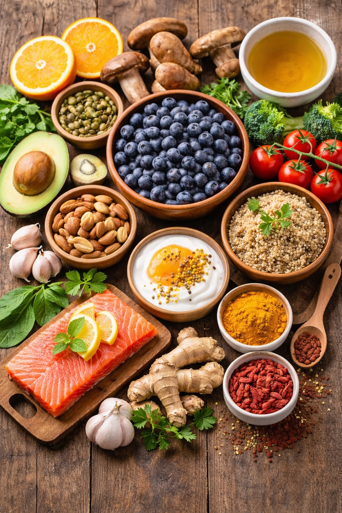

Superfoods for Energy & Immunity
Last updated: 2026-01-13 · 12 min read

- Think “daily inputs,” not miracle foods: protein, fiber, micronutrients, hydration, and sleep.
- Build a short list of resilient staples that store well and still improve nutrition.
- Pair vitamin/mineral-rich foods with fats or acidity when it improves absorption.
- Keep it practical: 1–2 small upgrades per meal beats a perfect plan you never follow.
Purpose: Add low-drama, high-impact foods that support steady energy and immune function—without turning your kitchen into a supplement cabinet.
The “energy stack” that actually works
Most “energy” problems are a mismatch between fuel (calories), building blocks (protein), and regulation (electrolytes, sleep, stress). Superfoods help most when they stabilize the basics.
- Protein: keeps blood sugar steadier and reduces snack spirals.
- Fiber: improves satiety and supports gut health (a major immune interface).
- Micronutrients: keep “small systems” running (thyroid, red blood cells, immune signaling).
- Hydration + electrolytes: frequent cause of fatigue that looks like “low motivation.”
Core list: foods that are both “super” and resilient
These are selected because they’re nutrient-dense and relatively easy to store, rotate, and use. You don’t need all of them—pick 5–8 that fit your preferences.
- Oats: steady carbs + beta-glucan fiber; easy breakfast base.
- Beans & lentils: fiber + protein + minerals; canned or dry.
- Eggs (fresh or powder): complete protein and choline; highly versatile.
- Canned fish (sardines/salmon/tuna): protein + omega-3s (varies by fish); long shelf life.
- Greek yogurt / kefir (when available): protein + fermented support for gut.
- Nuts & seeds (pumpkin, chia, flax): fats, minerals, fiber; rotate for freshness.
- Frozen berries: antioxidant-rich and convenient; no waste.
- Leafy greens (fresh, frozen, or dehydrated): micronutrient density; blend into meals.
- Garlic + ginger: flavor + broad culinary utility; supports “kitchen medicine” patterns.
- Olive oil: calorie density + cooking flexibility; rotate frequently.
- Tomatoes: lycopene + vitamin C; ideal soup/stew base—add olive oil for absorption.
- Broccoli: crucifer compounds; quick steam/sauté; pairs well with eggs, beans, or rice.
- Mushrooms: beta‑glucans; dried mushrooms store well and boost soups, rice, and stir-fries.
Why these help: simple benefits without hype
- Oats / beans / lentils: fiber supports gut microbes; steady energy vs spikes and crashes.
- Fish / seeds / walnuts: healthy fats that support brain performance and mood stability.
- Greens / vegetables / berries: micronutrients + phytochemicals that complement a mixed diet.
- Yogurt / kefir: convenient protein; fermented foods can support digestion for some people.
- Garlic / ginger / turmeric: easy daily use; best viewed as “supportive ingredients,” not cures.
Practical daily ideas (plug-and-play)
Use these like “modules” you can mix into normal meals.
Image alignment note: tomatoes, broccoli, and mushrooms are three ‘workhorse’ picks—easy to find, easy to store, and they slot into almost any meal while supporting energy metabolism and immune function.
- Breakfast: oats + frozen berries + yogurt + chia (or peanut butter).
- Lunch: lentil/bean soup + olive oil drizzle + greens; add canned fish on the side.
- Snack: nuts + fruit, or yogurt + cinnamon; keep it boring and repeatable.
- Dinner: rice + beans + veggies + eggs, or canned salmon patties + salad.
- “I’m tired” meal: canned soup + extra beans + olive oil + frozen greens (done in 5 minutes).
- Tomato + bean soup: canned tomatoes + beans + garlic + herbs; finish with olive oil. Make once, eat 2–3 times.
- Broccoli + mushrooms skillet: sauté mushrooms, add broccoli (fresh or frozen), finish with eggs or tofu; serve over rice.
Absorption tips (small tweaks, big payoff)
- Fat helps: many nutrients in plants are better absorbed with some fat (olive oil, yogurt, nuts).
- Acid helps: lemon/vinegar can improve flavor and may help with some mineral availability in meals.
- Iron awareness: plant-based iron is less bioavailable; pairing with vitamin C foods helps.
- Rotate oils and nuts: rancidity ruins benefits; store cool/dark and buy realistic quantities.
Pantry plan: “energy & immunity” shelf in one box
If you want a simple physical system, create a single bin that upgrades meals:
- chia/flax, pumpkin seeds, nuts, canned fish, dried herbs/spices, ginger/garlic (or powders), electrolyte packets
You’ll use it constantly, so rotation happens automatically.
Resources
Next steps
Continue with other Superfoods articles.
Educational content only. Not medical advice.